Introduction
This report summarises Round 1 official CSVs (three independent 10 000-tick sessions)
for ASH_COATED_OSMIUM and INTARIAN_PEPPER_ROOT. It mirrors the style of a tutorial-round
write-up: narrative, caveats, and many static plots for offline review.
- Do not pool days as one price process — each day starts a new level band (especially INTARIAN).
- Mid return lag-1 autocorrelation ≈ −0.5 is largely bid–ask bounce in the mid proxy, not alpha.
- Use detrended / session statistics for INTARIAN; use peg + microstructure for ASH.
INTARIAN — three sessions & intra-session drift
Overlay shows each day’s mid on the same timestamp axis. The rebased chart removes the ~+1000 level shift between days so you can compare shape of intra-session drift.
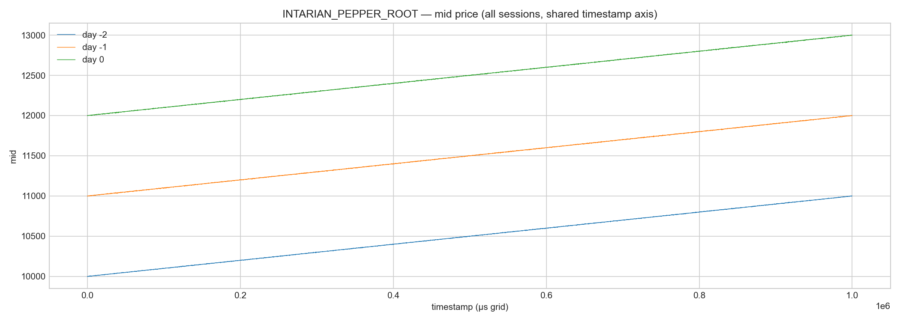
INTARIAN — rebased to session open
Same data as above, minus each session’s first mid — highlights parallel drift shapes.
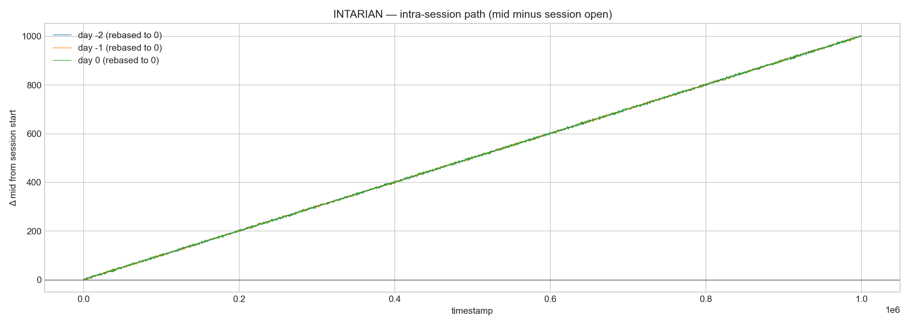
Linear trend + residuals (example day)
ADF on raw mid fails (unit root) while ADF on linearly detrended mids rejects a unit root in the residual — consistent with “smooth drift + stationary band” within a session.
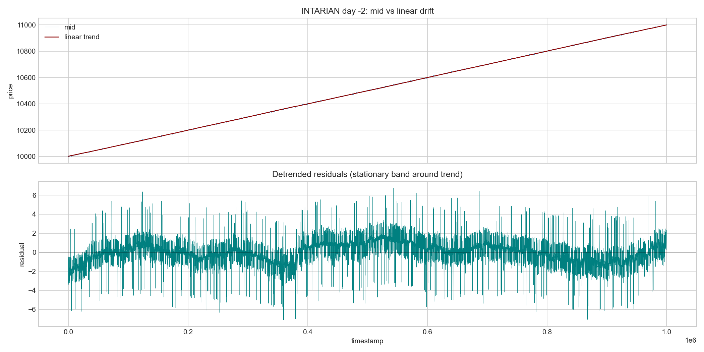
Drift homogeneity across quarters
Heatmap of mean one-tick price change by quarter of each session. If mean-reversion dominated halves, you would see sign flips; instead drift is positive in every cell.
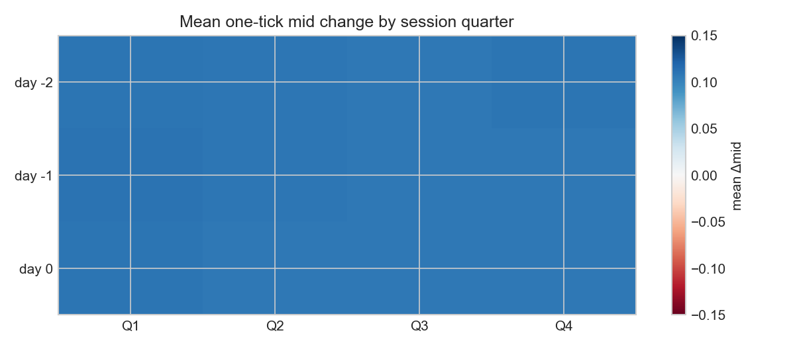
Autocorrelation at multiple return horizons
Lag-k autocorrelation for 1-, 2-, and 5-tick mid returns. The 1-tick curve near −0.5 largely collapses when using 2-tick returns — consistent with microstructure bounce.
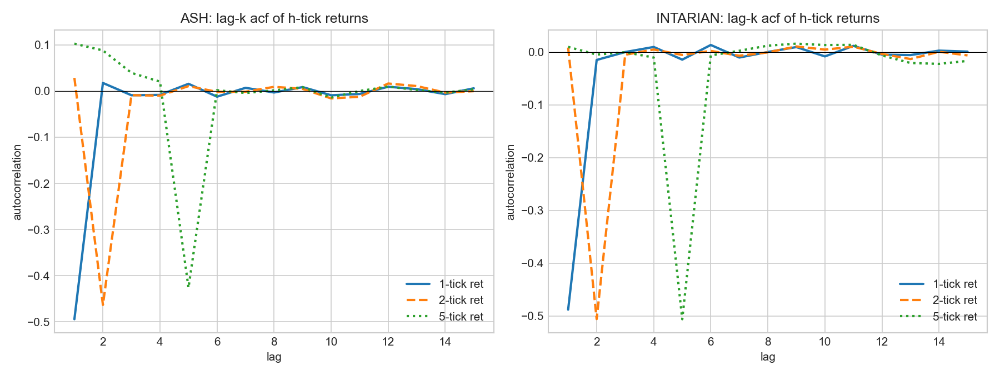
Variance ratios (log returns)
VR < 1 at short horizons indicates variance of multi-period returns lower than random-walk scaling — common under mean-reversion in returns or microstructure; interpret next to plots, not alone.
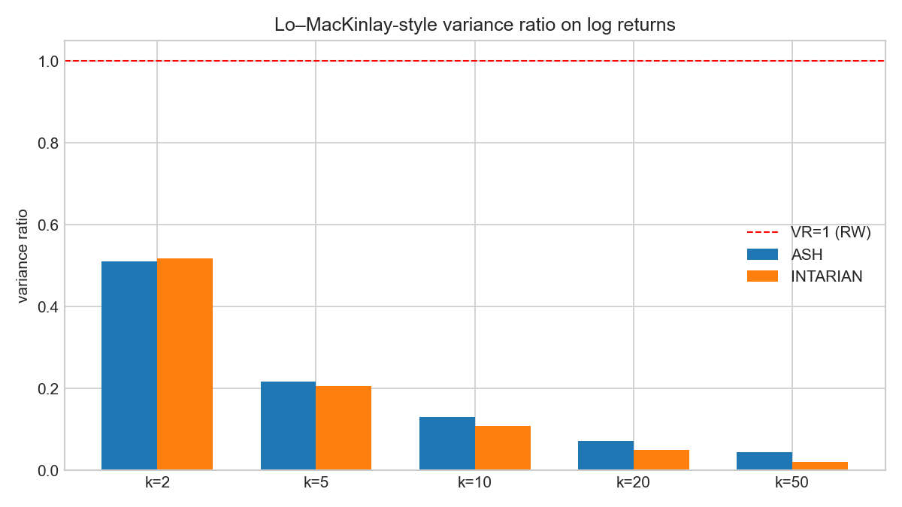
R/S scaling on log returns — ASH
Scatter of log segment length vs log mean R/S; slope ≈ Hurst exponent under classical R/S assumptions. Values are modest (~0.28–0.30) — not impossible Hurst values from mis-specified subsampled level series.
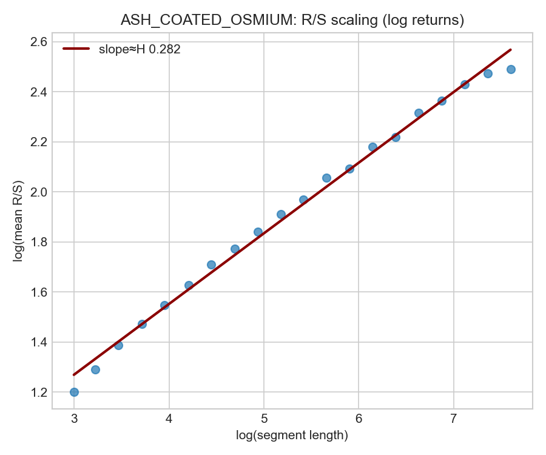
R/S scaling on log returns — INTARIAN
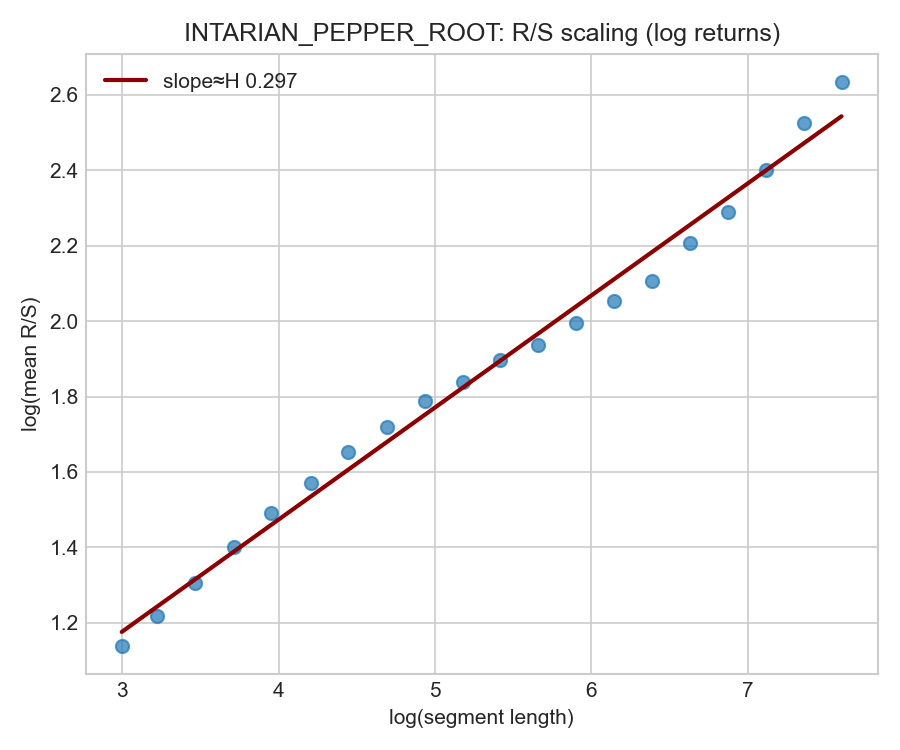
ASH — peg deviation
Deviation from 10 000 by day; ASH remains tightly anchored.
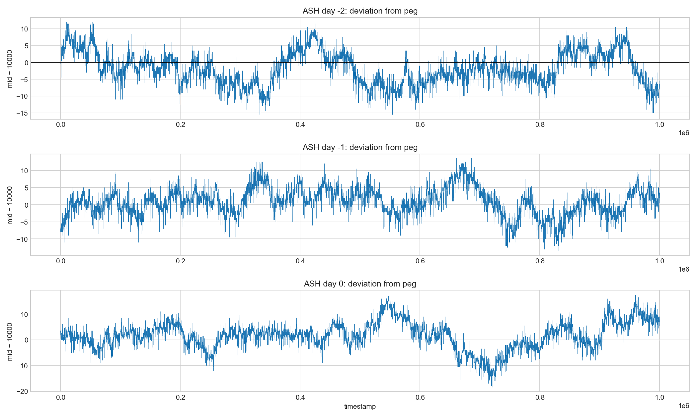
ASH — L1 spread over time
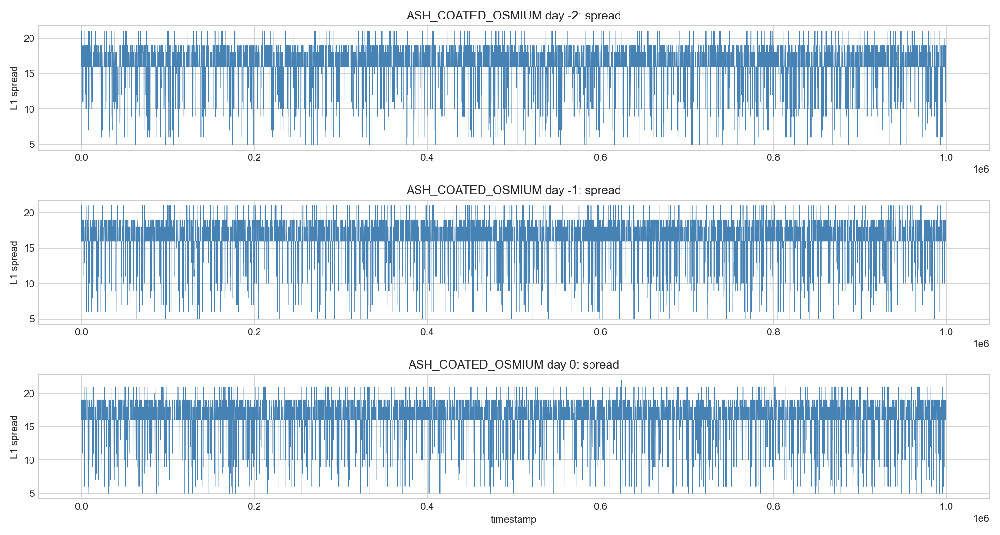
INTARIAN — L1 spread over time
Spread width sets how much mid can bounce without true information; compare across days.
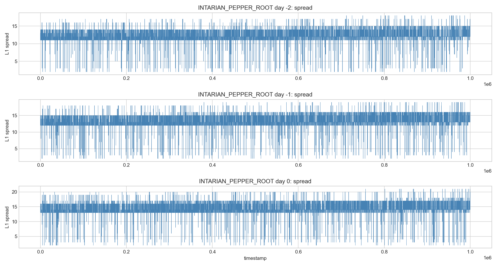
ASH — quote churn vs tight inside band
Rolling mean of “any L1 change” (blue) and rare “inside 9997–10003” band (orange), with mid deviation in grey.
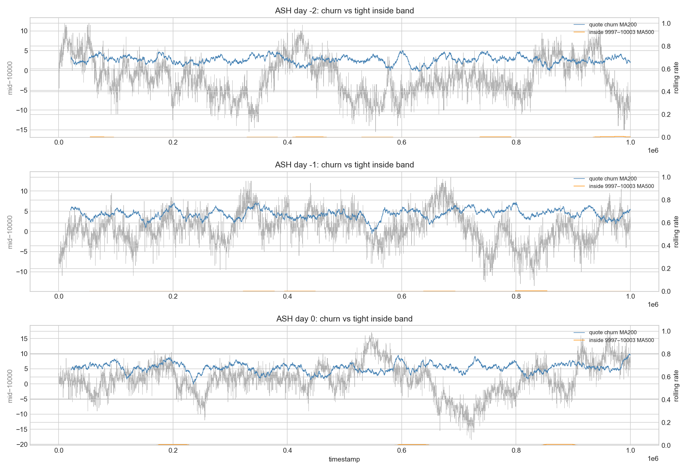
INTARIAN — signal density plots
Hexbin: (SMA10−mid) vs 5-tick forward move, and L1 imbalance vs 1-tick forward move. Correlations are partly mechanical from bounce; use for relative comparison of signal families.
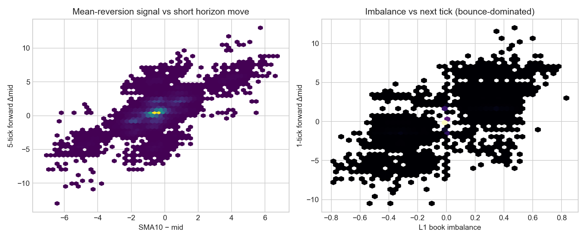
INTARIAN — market trade prices
Histogram of transaction prices from trades_round_1_*.csv (bot prints).
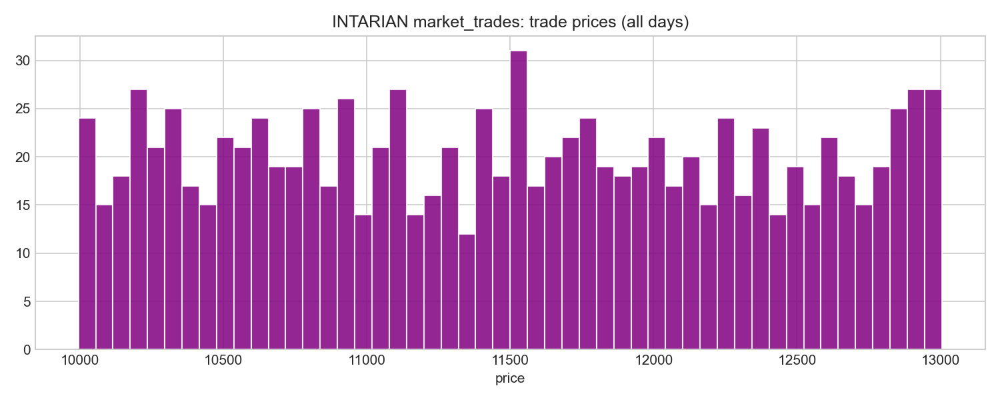
Cross-product mids & return scatter
Joined on (day, timestamp) where both have valid L1. Level correlation is dominated by day dummies; return scatter shows weak short-horizon linkage.
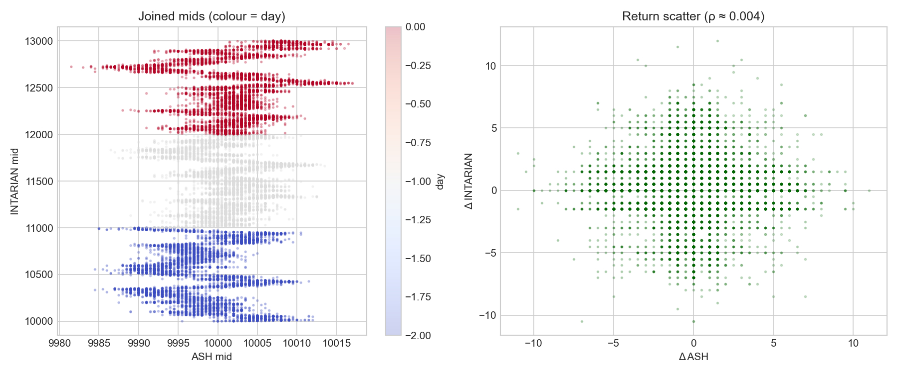
Key numbers (auto)
Quick snapshot from this run:
Data: C:\Users\HP ZBOOK\Downloads\IMC Prosperity\prosperity4\ROUND1 Valid L1 rows ASH: 27644 INTARIAN: 27688 INTARIAN day -2: start 9998.50 end 11001.50 mean_tick_dr +0.10884 INTARIAN day -1: start 10998.50 end 11998.00 mean_tick_dr +0.10843 INTARIAN day 0: start 11998.50 end 13000.00 mean_tick_dr +0.10825 INTARIAN pooled lag-1 acf(1-tick mid ret): -0.4882 ASH Hurst R/S log-ret: 0.280 INTARIAN Hurst R/S log-ret: 0.295
Figures from round1_deep_dive.py
Earlier pipeline outputs (same folder parent):